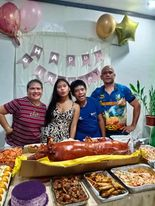

Hi my name is Rajah Dariel G. Manliguez
I am currently 14 years old, I was born on November 11, 2009. I currently live in Cebu City.
I practice martial arts and my main martial arts is Taekwondo.
I study in Don Bosco Technical College in Punta Pincesa Cebu City.
I plan to make it to the military specificaly scout ranger
On 2020, I it was a online class and it was really hard beacuase wifi is slow.
In my own words, Taekwondo is the best thing that has happened to me.
hobbies are sports, exercising, and Playing online games like Mobile legends. I need to be the best version of my self.
I want to be healthy and to see my grandchild.

My family
Made by Rajah Dariel G. Manliguez